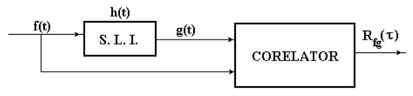

3 Proprietăți ale autocorelației
3.1 Definiții
Reminder: Pentru un proces aleator staționar (în sens larg) \(f\), autocorelația, văzută ca o funcție de \(\tau\), se definește astfel:
\[R_{ff}(\tau) = \overline{f(t) f(t + \tau)}\]
și reprezintă valoarea medie a produsului între oricare două eșantioane situate la o distanță \(\tau\) între ele.
Densitatea spectrală de putere (DSP) \(S_{ff}(\omega)\) este funcția care reprezintă puterea unui semnal în funcție de frecvență (\(f\) sau \(\omega = 2 \pi f\)).
Pentru un semnal determinist (ne-aleator), DPS este dată de modului transformatei Fourier la pătrat: \[S_{ff}(\omega) = |F(\omega)|^2\]
Pentru un semnal aleator, vom vedea mai jos.
DSP este o densitate, și ca atare asupra ei se lucrează cu integrala. Integrala din DSP ne dă puterea într-o anumită bandă de frecvențe.
Puterea în banda de frecvență \([f_1, f_2]\) este \(\int_{f_1}^{f_2} S_{ff}(\omega) d\omega\)
Puterea totală este \(P = \int_{-\infty}^{\infty} S_{ff}(\omega) d\omega\)
Pentru o singură frecvență individuală \(f_1\), puterea este mereu 0, excepție făcând daca spectrul semnalului conține un Dirac la acea frecvență.
Densitatea spectrală de putere este o funcție măsurabilă practic, care poate fi determinată experimental, fiind importantă în aplicații practice (inginerești). (de ex. puterea de emisie într-o anumită bandă radio nu trebuie să treacă peste un anume nivel, pentru a nu interfera cu alte comunicații).
Ce reprezintă DSP pentru un proces aleator? Spre deosebire de un semnal determinist, un proces aletor nu este un singur semnal, ci o infinitate de realizări posibile. Fiecare realizare are o transformată Fourier proprie, diferită, așadar DSP este de fapt ea însăși un proces aleator.
DSP a unui proces aleator trebuie înțeleasă ca fiind media DSP pentru toate realizările posibile. Ea are aceeași utilitate și semnificație ca în cazul unui semnal determinist, doar că în medie în raport cu toate realizările posibile.
3.2 Teorema Wiener-Hincin
Teorema Wiener-Hincin:
Densitatea spectrală de putere este transformata Fourier a funcției de autocorelație: \[S_{ff}(\omega) = \int_{-\infty}^{\infty} R_{ff}(\tau) e^{- j \omega \tau} d\tau\] \[R_{ff}(\tau) = \frac{1}{2 \pi}\int_{-\infty}^{\infty} S_{ff}(\omega) e^{j \omega \tau} d\omega\]
Fără demonstrație.
Teorema Wiener-Hincin e importantă întrucât leagă două concepte de natură complet diferită:
- funcția de autocorelație, care este o proprietate statistică legată de modul de fluctuație al eșantioanelor unui proces aleatpr
- densitatea spectrală de putere, o proprietate de natură fizică, care ține de energia semnalului
3.3 Zgomot alb
Un zgomot alb este un proces aleator a cărui funcție de autocorelație este un Dirac în origine: \[R_{ff}(\tau) = \delta(\tau)\]
sau, echivalent, a cărui densitate spectrală de putere este constantă pentru orice frecvență:
\[S_{ff}(\omega) = constant, \forall \omega \]
(Reminder: transformata Fourier a unui Dirac este un semnal constant).
Noțiunile cheie din această definiție sunt următoarele:
- Zgomotul alb este proces aleator, așadar orice eșantion este o variabilă aleatoare care fluctuează
- Autocorelația sa este un Dirac, adică este egală cu 0 pentru orice \(\tau \neq 0\), adică oricare două eșantioane diferite (\(\tau \neq 0\)) au corelație zero (necorelate). Ca interpretare, putem spune că valorile a două eșantioane distincte nu au legătură între ele, adică valoarea unuia nu implică nimic legat de valoarea altuia.
- Densitatea spectrală de putere este constantă, adică zgomotul afectează în mod egal toate frecvențele, până la \(f = \infty\)
Zgomotul alb este mai degrabă un model matematic. În practică, zgomotele se pot abate de la definiție.
De exemplu, în practică, pentru orice semnal puterea scade la \(0\) când se ajunge la frecvențe foarte înalte, pentru că puterea totală \(P = \int_{-\infty}^{\infty} S_{ff}(\omega)\) nu poate fi infinită. Un astfel de zgomot de numește zgomot alb de bandă limitată. În acest caz, autocorelația este aproximativ un Dirac, dar nu chiar infinit de “subțire”, ceea ce face ca eșantioane foarte apropiate să fie totuși corelate (de ex. din cauza unor mici capacități parazite inevitabile).
De asemenea, nu toate zgomotele sunt albe. Exista fenomene care produc zgomote pentru care DSP scade odată cu frecvența. De exemplu, zgomotul tip \(1/f\) dintr-un circuit electric este un zgomot a cărui DSP este proporțională cu \(1/f\).
Modelul de zgomot cel mai întâlnit în aplicații este cel de zgomot alb, Gaussian, aditiv (AWGN, Additive White Gaussian Noise), ceea ce înseamnă:
- zgomot: este un proces aleator (fiecare eșantion este aleator, fiecare realizare este diferită)
- alb: valorile eșantioanelor sunt necorelate între ele
- gaussian: eșantioanele individuale au distribuția normală
- aditiv: zgomotul se adună peste semnalul original (adică de ex. nu se multiplică cu acesta)
3.4 Proprietățile funcției de autocorelație
Se pot formula o serie de proprietăți ale funcției de autocorelație:
Este o funcție pară \[R_{ff}(\tau) = R_{ff}(-\tau)\]
- Demonstrație: Schimbare de variabilă în definiție
La infinit, tinde la o valoare constantă \[R_{ff}(\infty) = \overline{f(t)}^2 = const\]
- Dem.: două eșantioane la un interval \(\infty\) sunt necesar independente
Are valoarea maximă în 0 \[R_{ff}(0) \geq R_{ff}(\tau)\]
- Dem.: se pornește de la \(\overline{(f(t) - f(t + \tau))^2} \geq 0\)
- Interpretare: eșantioane diferite mai pot varia diferit, dar un eșantion variază întotdeauna identic cu sine însuși
Valoarea în 0 = puterea procesului aleator \[R_{ff}(0) = \frac{1}{2 \pi} \int_{-\infty}^{\infty} S_{ff}(\omega) d\omega\]
- Dem.: Se pune \(\tau = 0\) în transf. Fourier inversă din teorema Wiener-Hincin
Varianța = diferența între valoarea din 0 și cea de la \(\infty\) \[\sigma^2 = R_{ff}(0) - R_{ff}(\infty)\]
- Dem.: \(R_{ff}(0) = \overline{f(t)^2}\), \(R_{ff}(\infty) = \overline{f(t)}^2\)
3.5 Autocorelația unui proces aleator filtrat
Fie un proces aleator \(x\) aplicat la intrarea unui sistem oarecare \(H\), producând o ieșire \(y\):
- fie în timp continuu: intrarea \(x(t)\), sistemul \(H(s)\), ieșirea \(y(t)\)
- fie în timp discret: intrarea \(x[n]\), sistemul \(H(z)\), ieșirea \(y[n]\)
Dacă se știe că \(y\) este convoluția lui \(x\) cu răspunsul la impuls \(h\) al sistemului, cum depinde autocorelația ieșirii \(y\) de cea a intrării \(x\)?
Teoremă
Legătura dintre densitatea spectrală de putere la ieșie unui filtru, \(S_{yy}(\omega)\), și cea a semnalului de intrare, S_{xx}(), este: \[S_{yy}(\omega) = S_{xx}(\omega) \cdot |H(\omega)|^2\]
DSP a lui \(y\) este DSP a lui \(x\) multiplicată cu răspunsul în amplitudine, la pătrat, al filtrului
Demonstrație
Facem demonstrația doar pentru un proces aleator în timp discret. Avem: \[\begin{split} R_{yy}(\tau) =& \overline{y[n] y[n + \tau]}\\ =& \overline{\sum_{k_1=-\infty}^\infty h[k_1] x[n-k_1] \sum_{k_2=-\infty}^\infty h[k_2] x[n+\tau-k_2]}\\ =& \sum_{k_1=-\infty}^\infty \sum_{k_2=-\infty}^\infty h[k_1] h[k_2] \overline{x[n-k_1] x[n+\tau-k_2]}\\ =& \sum_{k_1=-\infty}^\infty \sum_{k_2=-\infty}^\infty h[k_1] h[k_2] R_{xx}[\tau - k_1 + k_2] \end{split}\]
Din teorema Wiener-Hincin se știe că: \[S_{ff}(\omega) = \sum_{\tau = -\infty}^{\infty} R_{ff}(\tau) e^{- j \omega \tau}\] așadar: \[ S_{yy}(\omega) = \sum_{\tau=-\infty}^{\infty} \sum_{k_1=-\infty}^\infty \sum_{k_2=-\infty}^\infty h[k_1] h[k_2] R_{xx}[\tau - k_1 + k_2] e^{- j \omega \tau} \]
Se face schimbare de variabilă \(\tau - k_1 + k_2 = u\), și rezultă că \(\tau = u + k_1 - k_2\). Înlocuind: \[\begin{split} S_{yy}(\omega) =& \sum_{u=-\infty}^{\infty} \sum_{k_1=-\infty}^\infty \sum_{k_2=-\infty}^\infty h[k_1] h[k_2] R_{xx}[u] e^{- j \omega (u + k_1 + k_2)}\\ =& \sum_{u=-\infty}^{\infty} R_{xx}[u] e^{- j \omega u} \sum_{k_1=-\infty}^\infty h[k_1] e^{- j \omega k_1} \sum_{k_2=-\infty}^\infty h[k_2] e^{ j \omega k_2}\\ =& S_{xx}(\omega) \cdot H(\omega) \cdot H*^(\omega)\\ =& S_{xx}(\omega) \cdot |H(\omega)|^2\\ \end{split}\]
Relația este valabilă și pentru procese aleatoare continue.
3.6 Aplicații ale (auto)corelației
3.6.1 Căutarea unei anume porțiuni într-un semnal mai mare
- Corelația a două semnale = o măsura a similarității celor două semnale
- Funcția de corelație măsoară similaritatea unui semnal cu toate versiunile decalate ale celuilalt
- Exemplu numeric la tablă, semnale de lungime finită
- Corelația poate fi utilizată pentru localizare
- Funcția de (auto)corelație are valori mari atunci când cele două semnale se potrivesc
- Valori mari sunt atunci când valorile pozitive / negative ale semnalelor se potrivesc
- Valori mici atunci când nu se potrivesc
Semnalul căutat:
import matplotlib.pyplot as plt, numpy as np
x1 = np.array([1, -1, 1, -1, 1, -1, 1, -1, 1, -1, 1, -1, 1, -1, 1, -1, 1, -1, 1, -1])
x2 = np.hstack((np.random.randn(800), x1, np.random.randn(300)))
corr = np.correlate(x2, x1)
plt.figure(figsize=(12,6))
plt.stem(x1); plt.title ('Signal to look for');plt.axis([0, 20, -1.5, 1.5])
plt.savefig('fig/01_RandomSignals_CorrSearch_Pattern.png', transparent=True, bbox_inches='tight', dpi=300)
plt.close()
Semnalul de dimensiuni mari:
import matplotlib.pyplot as plt, numpy as np
x1 = np.array([1, -1, 1, -1, 1, -1, 1, -1, 1, -1, 1, -1, 1, -1, 1, -1, 1, -1, 1, -1])
x2 = np.hstack((np.random.randn(800), x1, np.random.randn(300)))
corr = np.correlate(x2, x1)
plt.figure(figsize=(12,6))
plt.stem(x2); plt.title ('Signal to search in');
plt.savefig('fig/01_RandomSignals_CorrSearch_CompleteSignal.png', transparent=True, bbox_inches='tight', dpi=300)
plt.close()
Rezultatul corelației:
import matplotlib.pyplot as plt, numpy as np
x1 = np.array([1, -1, 1, -1, 1, -1, 1, -1, 1, -1, 1, -1, 1, -1, 1, -1, 1, -1, 1, -1])
x2 = np.hstack((np.random.randn(800), x1, np.random.randn(300)))
corr = np.correlate(x2, x1)
plt.figure(figsize=(12,6))
plt.stem(corr); plt.title ('Correlation signal');
plt.savefig('fig/01_RandomSignals_CorrSearch_Result.png', transparent=True, bbox_inches='tight', dpi=300)
plt.close()
3.6.2 Identificare de sistem
Determinarea răspunsului la impuls al unui sistem necunoscut, liniar și invariant în timp
Se bazează pe corelația intrării cu ieșirea sistemlui

\[\begin{split} R_{fg}(\tau) =& \overline{f[n] g[n + \tau]}\\ =& \overline{f[n] \sum_{k=-\infty}^\infty h[k] f[n+\tau-k]}\\ =& \sum_{k=-\infty}^\infty h[k] \overline{f[n] f[n+\tau-k]}\\ =& \sum_{k=-\infty}^\infty h[k] R_{ff}[\tau - k]\\ =& h[\tau] \star R_{ff}[\tau] \end{split}\]
Dacă intrarea \(f\) este zgomot alb cu puterea \(A\), \(R_{ff}[n] = A \cdot \delta[n]\), și \[R_{fg}(\tau) = h[\tau] \star R_{ff}[\tau] = A \cdot h[\tau] \star \delta[\tau] = A \cdot h[\tau]\]
Corelația măsurată este proporțională cu răspunsul la impuls al sistemului necunoscut